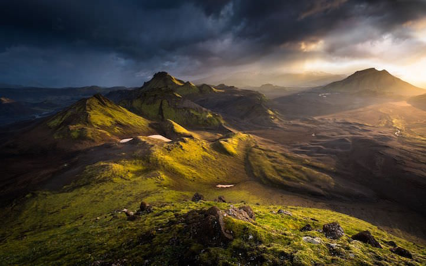

Southern Highlands

Autor: Greg Whitton
Año de publicación: 2014
Comentario del autor:
Después de haber recorrido unos 50 metros montaña abajo,
las nubes comenzaron a separarse ligeramente. La luz solo duró unos minutos. Hice algunas otras fotografías donde la luz se volvió
completamente épica, pero esta es la mejor, ya que capta perfectamente el momento en el que la luz se está construyendo.
Crítica:
La imagen de Greg resultó ser la gran favorita por los jueces debido a
la forma en que la luz fue capturada, dando contornos a los picos de Islandia… Es dramática, tiene impacto y longevidad. Su fotografía
le convierte en el mejor fotógrafo al aire libre del año 2014.